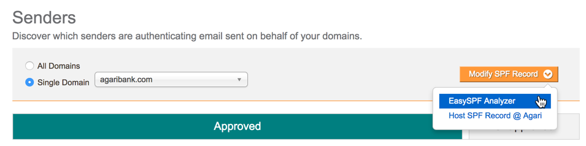
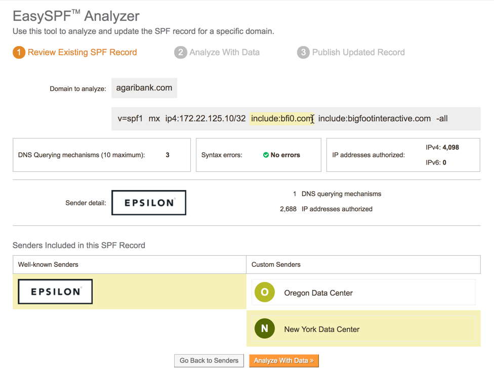
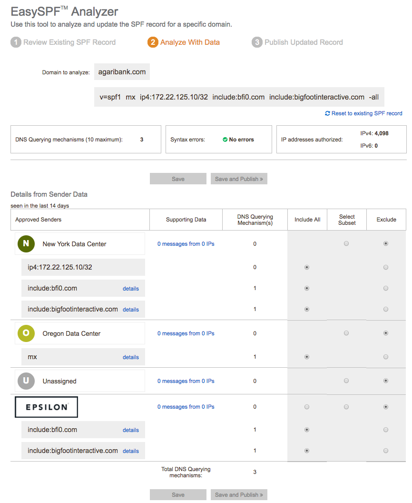
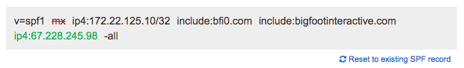
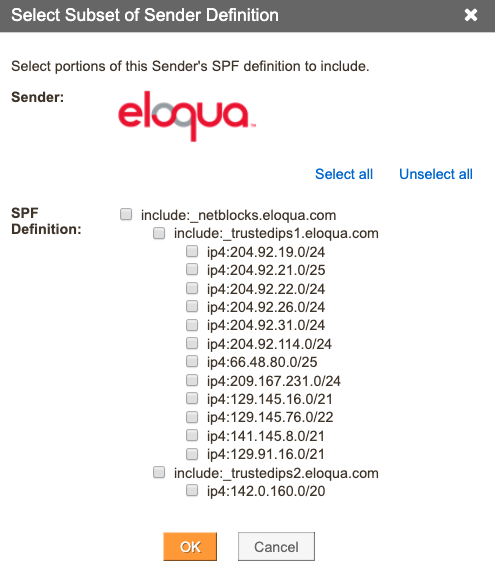
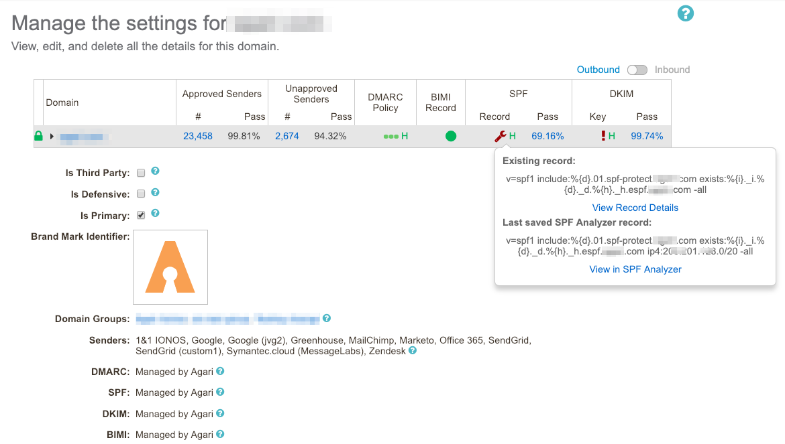
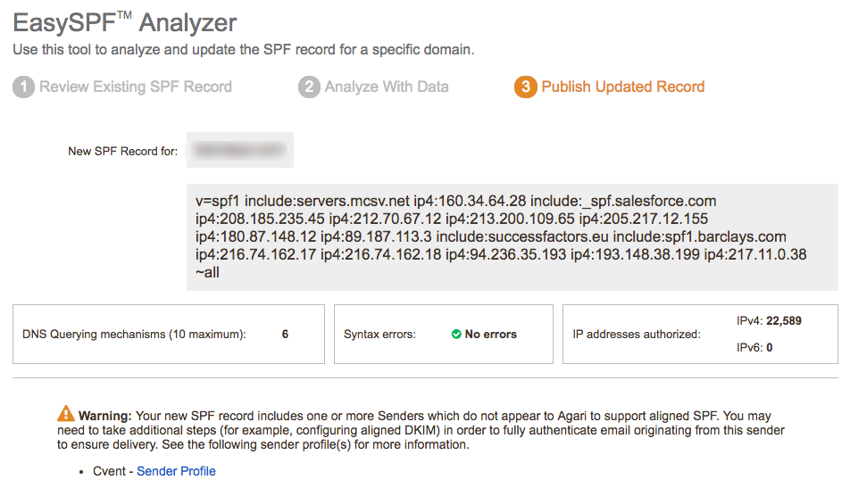

If you host your own SPF records, you can use EasySPF™ Analyzer to analyze an existing SPF record or to create a brand new SPF record based on your approved senders.
You can use EasySPF Analyzer only for domains that are not hosted by Agari.
Go to Diagnostics > Senders.
Select a single domain.
Click Modify SPF Record > EasySPF Analyzer. 
The EasySFP Analyzer has 3 steps that you will take to create or modify an SPF record:
Review the existing SFP record (if any)
Analyze the sender data
Publish the updated record
Review the Existing SPF Record
In the first step of the EasySPF Analyzer, review the existing SPF record. Take note of:
The senders identified within SPF record
The number of IP addresses authorized
The number of DNS querying mechanisms
Any syntax errors in the existing record
You can hover the SPF Record components to show more information and learn about the connection between mechanism components and the relationship with the Approved Senders for the domain you selected.

EasySPF Analyzer: Step 1
Analyze the Sender Data
Click Analyze with Data to modify the current SPF Record.

EasySPF Analyzer: Step 2
In this view, you can:
Click the Supporting Data link to review the messages sent for the domain from that Sender.
Perhaps you have purchased a dedicated IP address from a third-party sender. You may want to narrow the definition for the Sender in your SPF record (in this case) to a smaller set of IP Addresses. You can review the number of IP addresses used to send messages from that sender in the supporting data view (and even drill down further
For each of the Well-known and Custom Senders for a domain, the Supporting Data link shows:
IP Address: Origin IP address of messages
IP Addresses referenced by any include mechanism for a Sender
PTR Name (Pointer Record): Host name of IP Address
Sender Based Reputation Score (SBRS)
Country: Geographic Location of IP address
SPF Pass Rate %
DMARC Pass Rate %
DMARC Pass Volume
Total Email Volume
Click Include, Include Subset, or Exclude to modify the definition for each Sender represented in the domain’s SPF record.
As you made changes, additions and deletion are updated in the modified SPF record shown at the top of the page:

Changes to the SPF Record
The DNS Query mechanisms are also updated as you change from an include mechanism to an explicit IP address or range.
You can reset to the existing SPF Record (as currently found in DNS) at any time to remove any changes you’ve made.
Editing a specific subset of a Well-known Sender definition will “flatten” an include statement to a series of IP addresses.

Selecting a subset of a Well-known Sender definition
Click
Save to remain on Step 2 and continue to modify the SPF Record
Save and Publish to move onto Step 3, Publish Updated Record.
If you save a modified record in progress, you can return to the modified view by clicking the link in the Analyze > Domains > Domain Detail page:

Saved EasySPF Analyzer record for a domain
Publish the Updated Record
If you click the “Publish” button, Step 3 of the EasySPF Analyzer will present the modified SPF record to you.
You may need to review an “Unaligned Sender Warning” if you have included a mechanism for a sender whom Agari knows not to send aligned SPF email. In this case, you should visit the Sender Profile page for that sender to determine if additional actions are needed to fully authenticate message from that sender.

Easy SPF Analyzer: Step 3 (upper portion)
The lower portion of the page will contain the new SPF record and instructions for creating the SPF record in DNS.
Click Print Instructions to create a printer-friendly version of the instructions.